Explore Melbourne
A Brief History
Melbourne prospered after an 1850s gold rush with Victorian arcades, tramlines, and laneway culture. Federation Square, Royal Exhibition Building, and Yarra embankments record how Victoria's capital became a finance and arts hub in southeast Australia. Royal Botanic Gardens and Yarra riverside precincts extend gold-era boulevards through Victoria's capital grid.
Attractions Map
Top Sights & Activities
South Melbourne Market
South Melbourne Market is a indoor market that has been drawing locals and tourists since 1867. While it may not be as large as Queen Victoria Market, it offers a diverse range of stalls selling fresh produce, meat, seafood, artisanal products, and vintage items. The market also features cafes serving global cuisine.
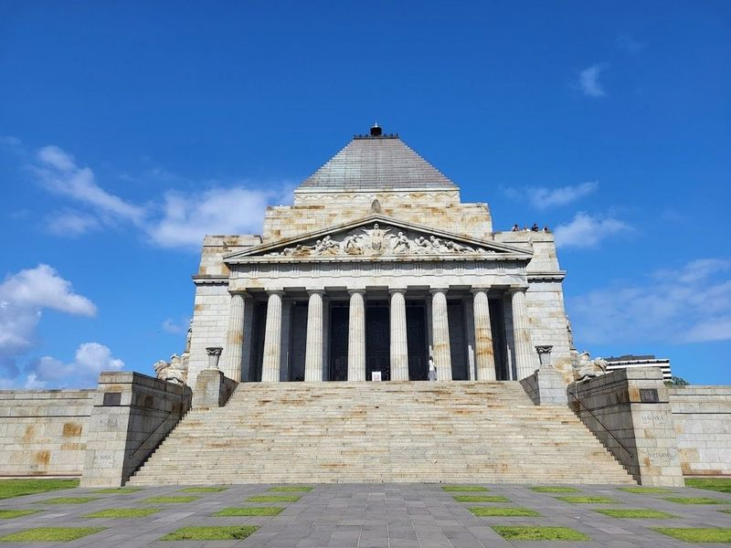
Shrine of Remembrance
The Shrine of Remembrance in Melbourne is the largest war memorial in Victoria, serving as a tribute to Australian soldiers who sacrificed their lives during the World Wars. The shrine hosts over 120 ceremonies and commemorative services annually, making it an active venue for honoring heroes. Its location offers views of Melbourne city and the bay area. The solemn atmosphere and architectural design resembling ancient Greece create a poignant experience for visitors.
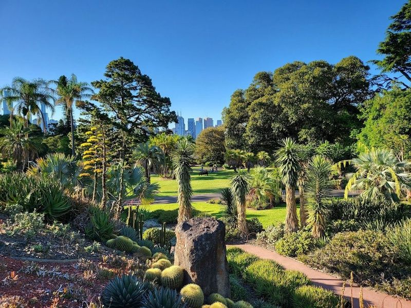
Royal Botanic Gardens Victoria - Melbourne Gardens
Royal Botanic Gardens Victoria - Melbourne Gardens, established in 1846, covers 36 hectares and features Australian species as well as non-native gardens. Similar to New York's Central Park, it occupies a significant portion of the city and offers various attractions such as the Melbourne Observatory, Guilfoyles Volcano, and Fern Gully. The gardens are home to diverse wildlife including black swans, kookaburras, and cockatoos.
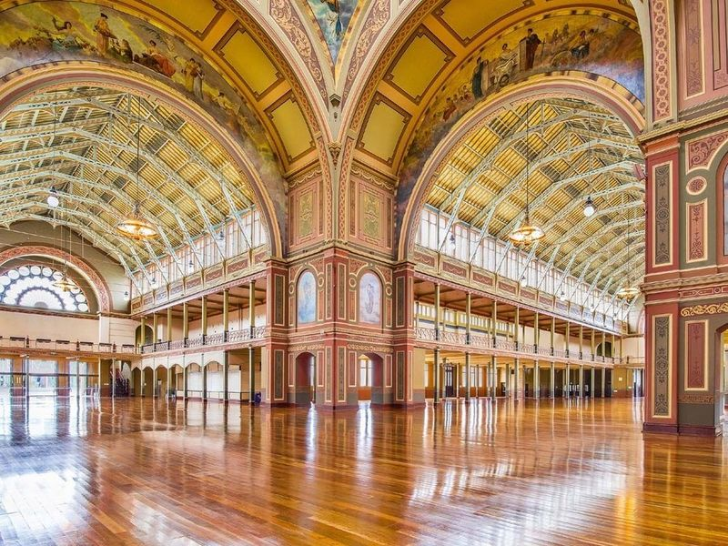
Royal Exhibition Building
The Royal Exhibition Building, constructed in 1880, is a significant 19th-century exhibition center with a striking dome. It is situated amidst beautifully landscaped gardens and holds UNESCO World Heritage status. This venue hosts various major events and exhibitions throughout the year, such as the Melbourne International Flower & Garden Show and GABS (the Great Australasian Beer SpecTAPular). Notably, it was also the location of Australia's first Parliament in 1901.
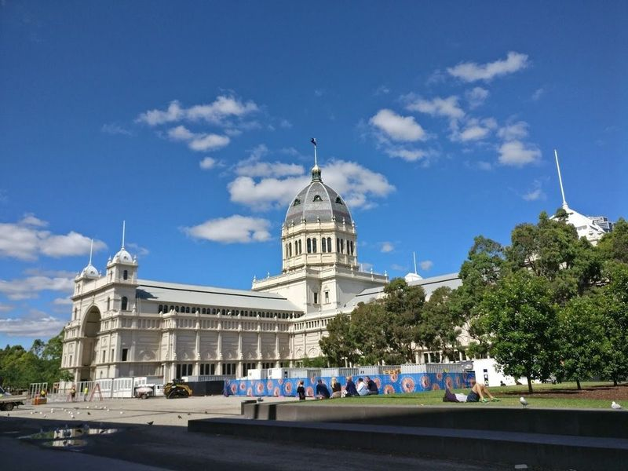
Carlton Gardens
Carlton Gardens, located in Carlton near Melbourne's CBD, is a beautifully landscaped Victorian-era park that houses the Royal Exhibition Building and Melbourne Museum. This World Heritage-listed site offers a picturesque setting for picnics and leisurely strolls. Visitors can grab delicious takeaway treats from nearby delis, trattorias, or cafes on Lygon or Brunswick Streets before finding a cozy spot on the grassy patches within the gardens.
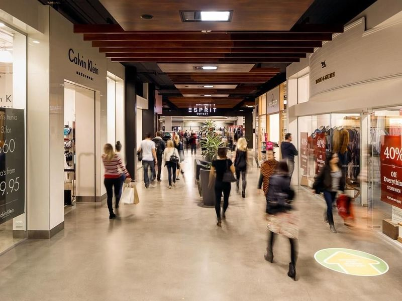
DFO South Wharf
DFO South Wharf is a shopping haven for both local and international brands, with over 180 stores offering a wide range of products from fashion to household items. Popular brands like Adidas, Armani, Calvin Klein, and Nike can be found here. After a day of shopping, visitors can relax at the waterfront cafes, restaurants, and bars along the South Wharf Promenade.
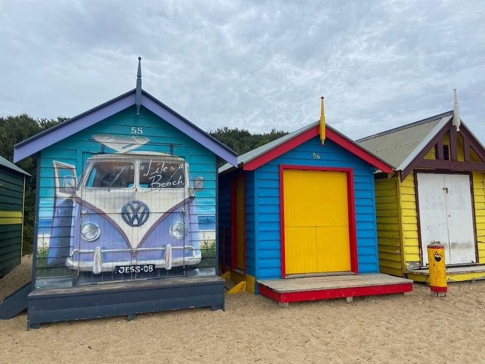
Brighton Bathing Boxes
The Brighton Bathing Boxes, located about 12km south of Melbourne city center at Brighton Beach, are a collection of 82 brightly colored wooden beach huts dating back to the early 1900s. Originally used for changing into swimwear during the Victorian era, these and much-photographed structures have become a staple of the beachfront. Each hut has its own unique design and character, making them a popular spot for tourists and locals alike to capture memorable photos.
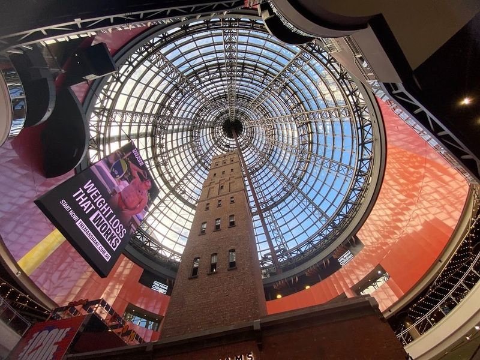
Melbourne Central
Melbourne Central is a bustling multilevel space with over 300 retailers, offering a wide array of Australian and international fashion brands, dining options, cafes, pubs, bars, beauty shops, and a cinema. The Coops Shot Tower stands tall under a glass-domed roof and is a popular spot for visitors to catch the hourly performance of the Australian song Waltzing Matilda.
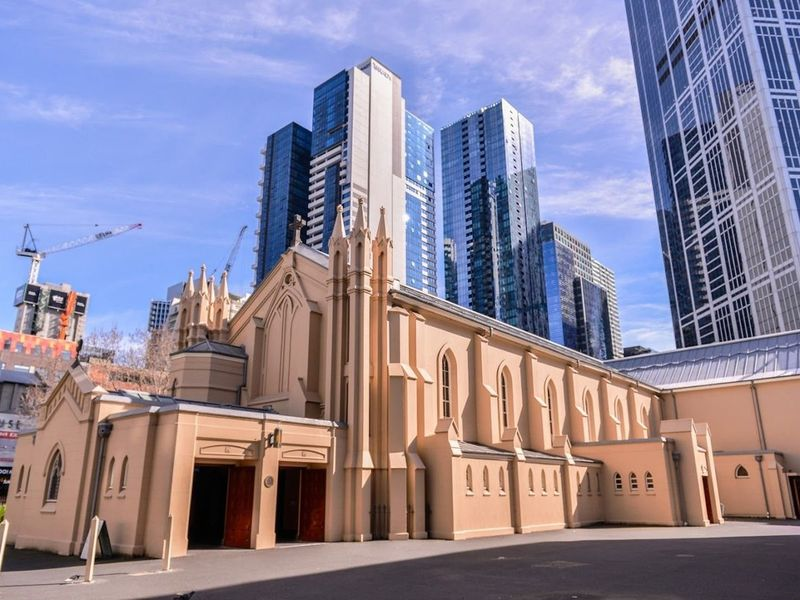
St Francis’ Church
St. Francis’ Church is a beautiful Catholic church in Victoria, built between 1841 and 1845. It is one of the oldest churches in the city, and despite its age it is very well maintained. The ambience on a Sunday night during Easter mass was peaceful and serene. recommend visiting if you are ever in the area!.
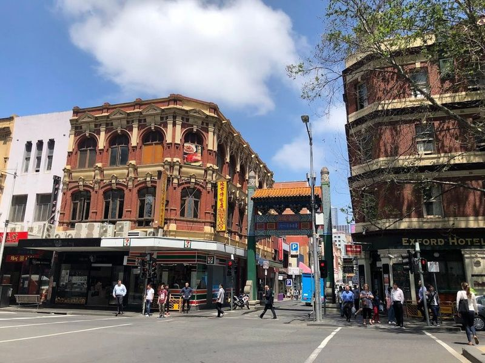
Chinatown Melbourne
Chinatown Melbourne is a and historic neighborhood that includes Chinese eateries, shops, and cultural events. The culinary scene in Melbourne reflects its diversity, with options ranging from street food in Chinatown to upscale dining experiences along the Yarra River. Visitors are encouraged to try local delights such as fairy bread, salt and pepper calamari, and Anzac biscuits. Additionally, the city's passion for brunch at quirky cafes in Fitzroy is not to be missed.
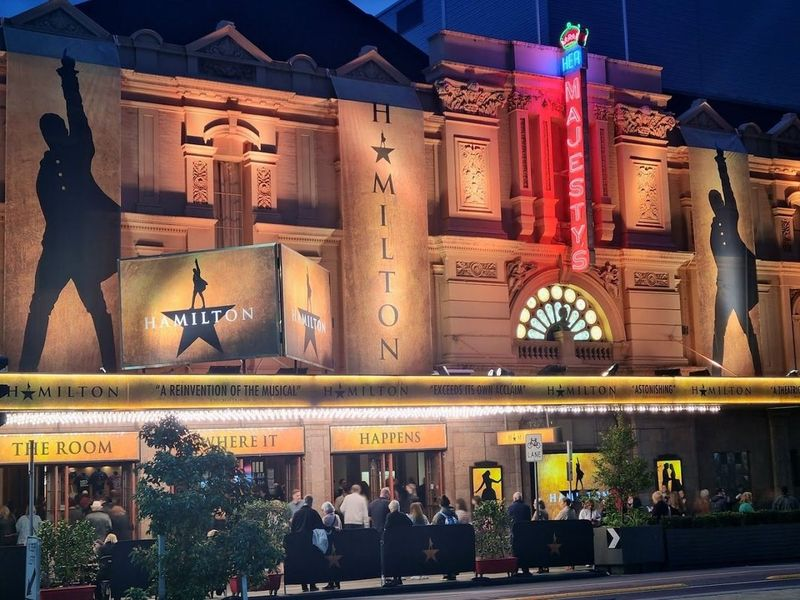
Her Majesty's Theatre
Her Majesty's Theatre, located on Exhibition Street in Melbourne, is a historic 19th-century venue known for its opulent red and gold decor. Originally built in 1886 as the Alexandra Theatre, it has since become a popular destination for musicals, ballet performances, and international concert acts. The grand architecture of the building adds to its charm and allure.
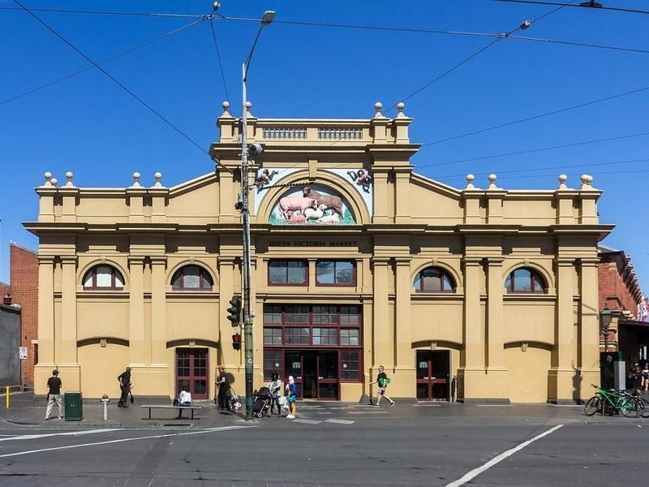
Queen Victoria Market
Queen Victoria Market, also known as Queen Vic or the Vic Market, is a historic landmark in Melbourne spanning 2 city blocks. It's a paradise for retail enthusiasts, offering everything from food to clothing and hand-crafted jewelry. With over 600 vendors, the market features fresh food, specialty restaurants, grocers, cafes, and ice cream shops. Additionally, it hosts other markets such as the Summer Night Market and the Melbourne Book Market on specific days.
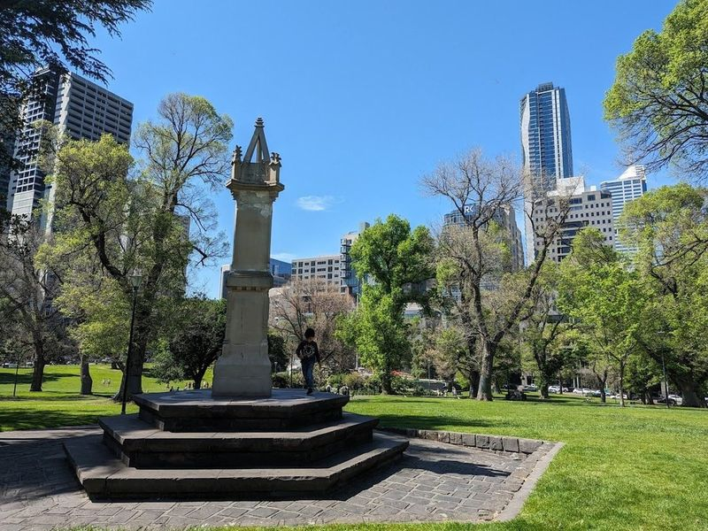
Flagstaff Gardens
Flagstaff Gardens, established in 1862, is one of Melbourne's oldest parks and a designated heritage site. Located across from the renowned Queen Victoria Market, it offers spacious lawns, seasonal flower displays, and diverse tree species. The park features recreational facilities such as tennis courts, a playground, public toilets, barbecues, and a bowling green.
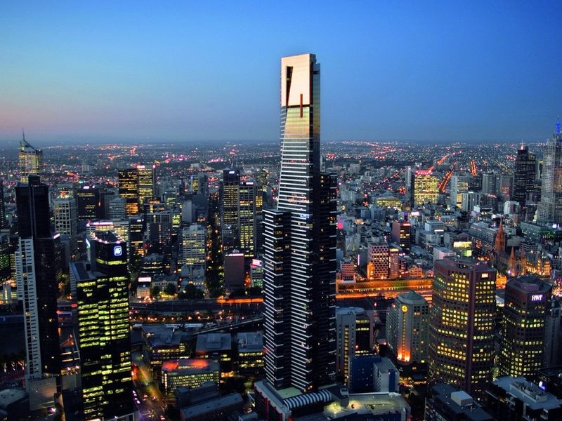
Melbourne Skydeck
The Melbourne Skydeck, located on the 88th floor of the Eureka Tower, offers a luxurious observation deck with panoramic views of the city. Visitors can enjoy vistas of the CBD, Yarra River, and surrounding suburbs from this gold-plated vantage point. The highlight is a protruding glass cube that provides an exhilarating experience for those seeking an adrenaline rush.
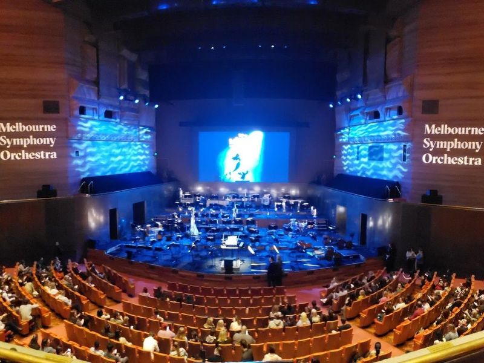
Hamer Hall
Hamer Hall is a renowned concert venue in the heart of Melbourne, offering an elegant space for symphony and chamber orchestras, as well as jazz and rock 'n' roll concerts. What sets it apart is its unique design that allows visitors to enjoy views without having to ride an elevator. The exterior staircase provides access to city and riverside vistas. Once inside, the hall's intimate atmosphere and beautiful acoustics create a captivating experience for concert-goers.
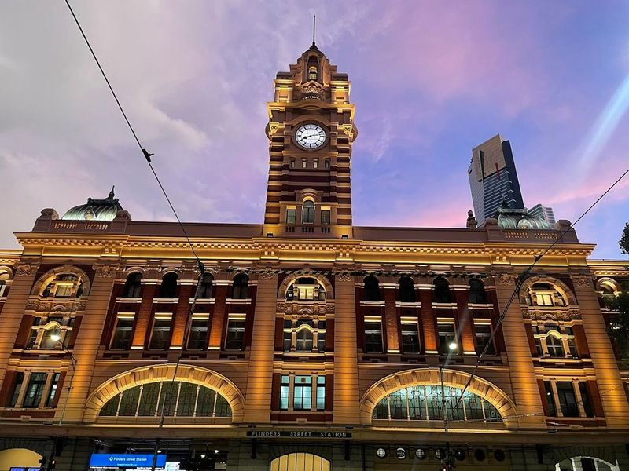
Flinders Street
Flinders Street Railway Station is a true gem nestled in the heart of Melbourne, boasting a yellow facade and an dome that has captured the hearts of locals and visitors alike since its opening in 1909. This architectural marvel, with its grand arched entrance and Romanesque Revival style, serves as both a bustling transport hub and a beloved meeting point for generations.
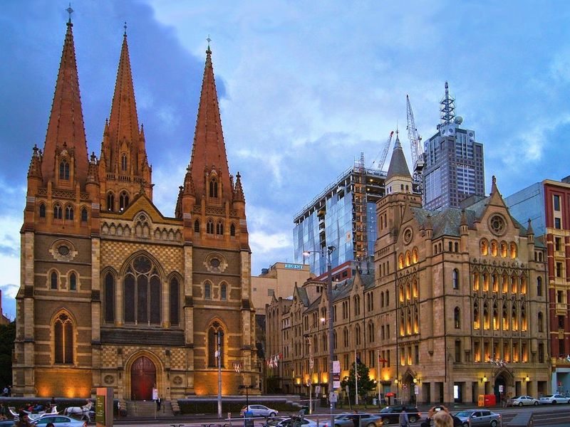
St Paul's Cathedral, Melbourne
St Paul's Cathedral in Melbourne, consecrated in 1891, is a neo-Gothic structure with twin spires and stained-glass processional doors. Located at the intersection of Flinders Street and Swanston Street, it stands as one of the city's most recognizable landmarks. Designed by renowned architect William Butterfield, the cathedral boasts impressive vaulted ceilings, intricate statuary, and patterned floor tiles inside. The exterior features a towering statue of Matthew Flinders.
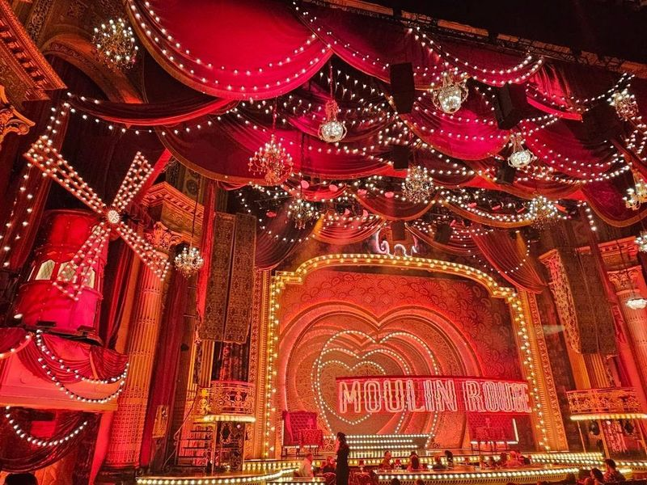
Regent Theatre
The Regent Theatre, originally a 1920s cinema, has been splendidly refurbished and stands as a charming and opulent venue for live concerts and internationally renowned musicals. Despite facing challenges like fire and threats of demolition, the theatre was magnificently restored in 1996 to its former glory. With seating for up to 2,145 patrons over two levels, complete with chandeliers and lavish seating, the theatre offers a luxurious experience.
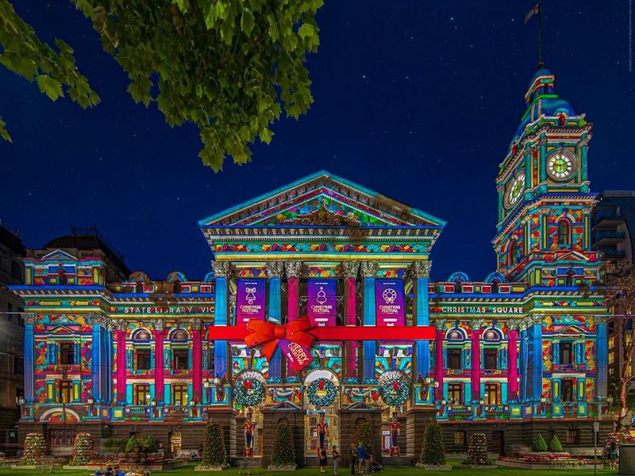
Melbourne Town Hall
Melbourne Town Hall is a 19th-century building In the city, serving as the seat of local government and a venue for various events. The grand organ with its 10,000 pipes is a hidden gem within the hall and is the largest of its kind in the Southern Hemisphere.
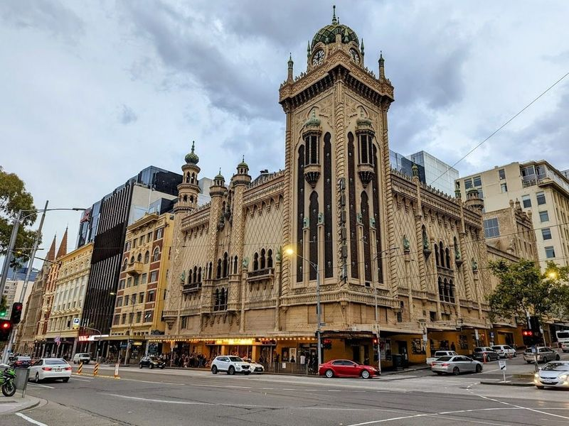
Forum Melbourne
Forum Melbourne, In Melbourne's CBD, is a live music venue that has recently undergone extensive renovation and restoration. The auditorium boasts a beautiful domed ceiling adorned with lights to resemble the night sky and statues reminiscent of ancient Greece. Hosting an impressive lineup of artists such as Marlon Williams, Bastille, Amy Shark, and Flight Facilities, it offers top-notch acoustics for a crystal-clear musical experience.
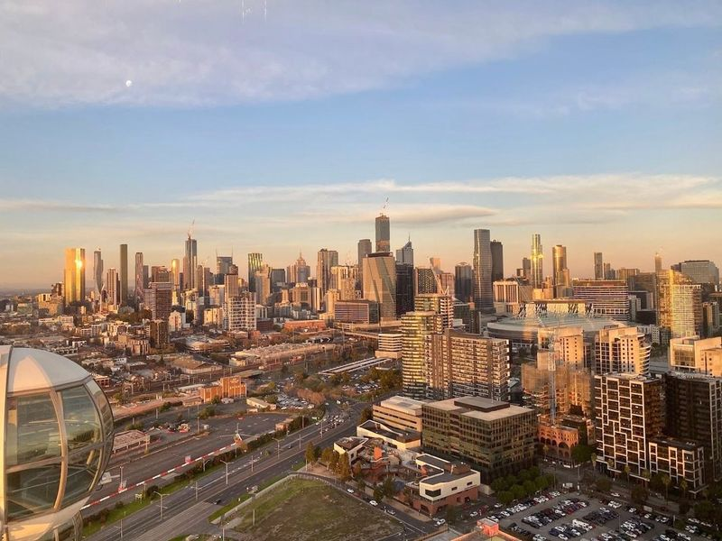
Melbourne Star Observation Wheel
The Melbourne Star Observation Wheel is a massive rotating wheel offering 360-degree views and glass-enclosed cabins for up to 20 people. It provides a unique introduction to the color, history, and culture of the city. Whether you're familiar with Melbourne or visiting for the first time, it offers a way to get your bearings. The 30-minute rotation allows you to take in ever-changing views of inner Melbourne, lush gardens, sports stadiums, cultural precincts, and Port Phillip Bay.
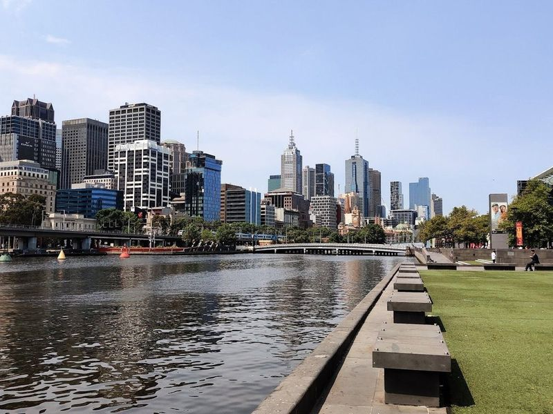
Sidney Myer Music Bowl
Sidney Myer Music Bowl is a popular performance venue located within the King's Domain Gardens in Melbourne. The gardens feature mature trees, beautiful flower beds, and notable landmarks such as Government House and the Shrine of Remembrance. The music bowl hosts free concerts by the Melbourne Symphony Orchestra during the summer months, offering a unique outdoor musical experience. Events like Carols by Candlelight are well-organized and provide a meaningful celebration for attendees.
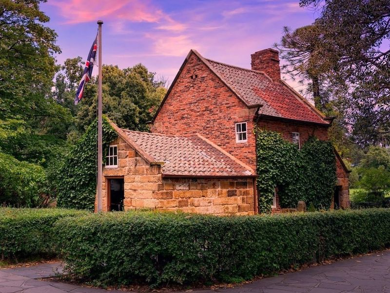
Cooks' Cottage
Cooks' Cottage is a historic building located in the serene Fitzroy Gardens, Melbourne. Originally constructed in Yorkshire, England in 1755, it was later transported to Australia as a tribute to Captain James Cook's family. Although the famous explorer never resided here, his father built the cottage. Visitors can explore its interior, which showcases 18th-century living with period furniture and artifacts.
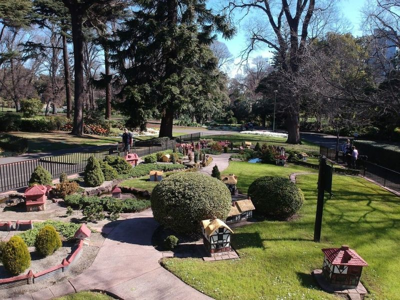
Fitzroy Gardens
Fitzroy Gardens, a historic 26-hectare site located in the city center, offers a picturesque setting with its lush lawns, tree-lined walking paths, and charming cafes. The gardens boast a rich history spanning 150 years and feature various attractions such as fountains, sculptures, historic buildings, ornamental follies like the old bandstand and Temple of the Winds Rotunda.
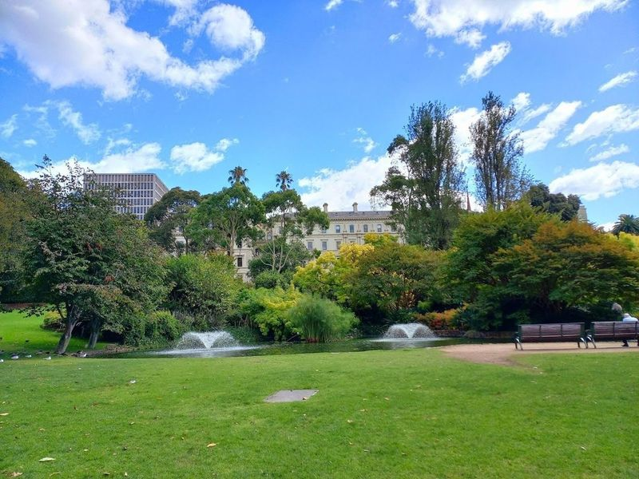
Treasury Gardens
Located on the corner of Fitzroy Gardens and adjoining Spring Street, Treasury Gardens is a picturesque green space in Melbourne. It hosts community events and private functions while serving as a recreational facility for those living on the east side of the CBD. The gardens feature an ornamental pond with monuments to John F. Kennedy, Robert Burns, and Sir William Clarke. Additionally, there are statues of Victorian politicians scattered around the large embankment.
SEA LIFE Melbourne Aquarium
SEA LIFE Melbourne Aquarium is a popular attraction for families and travelers in Melbourne. It houses over 10,000 marine animals, including sharks, crocodiles, penguins, and colorful fish. The aquarium features 12 interactive zones where visitors can walk through underwater tunnels to observe sea creatures swimming overhead. Additionally, guests can come face to face with Pinjarra, one of Australia's largest saltwater crocodiles.
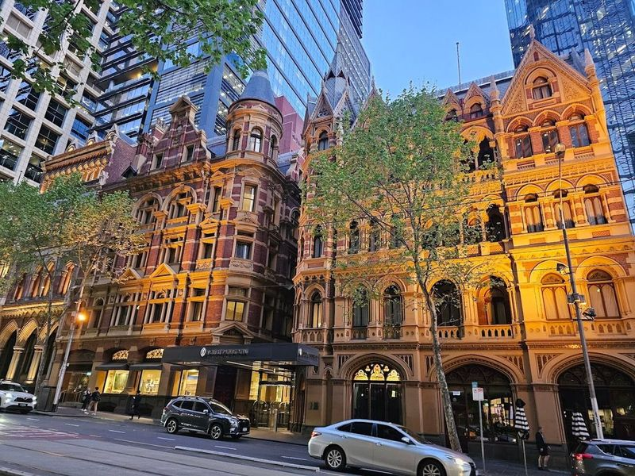
Rialto
Rialto Towers, celebrating its 30th anniversary, is an part of Melbourne's skyline. The South Tower stands at 251m and is the seventh tallest building in Australia, while the North Tower reaches 185 meters. The complex underwent a recent refurbishment that seamlessly blends old and new elements across its 55+ levels. Visitors can enjoy ground-level coffee shops and eateries as well as views from the top floors.
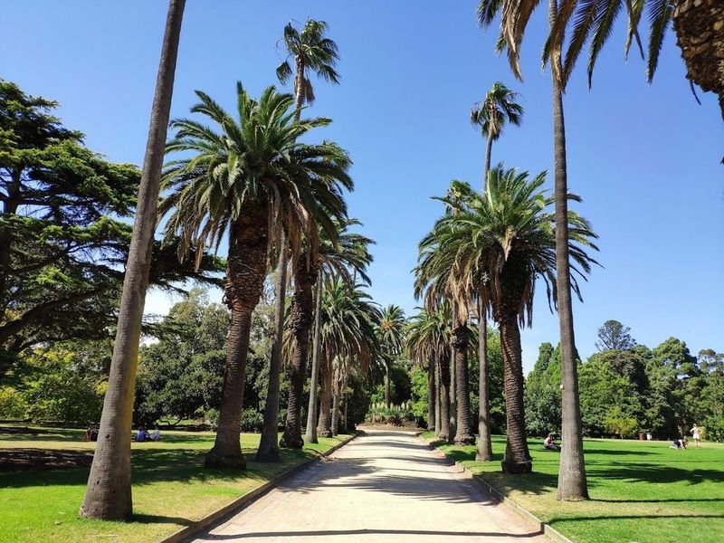
St Kilda Botanical Gardens
St Kilda Botanical Gardens, established in 1857, cover 16 acres and offer a more intimate and community-oriented experience compared to the larger Royal Botanic Garden. The gardens feature a variety of attractions including a rosary, flower beds, exotic trees, a pond, a conservatory, a rotunda, playgrounds, and even a giant chessboard with tables.
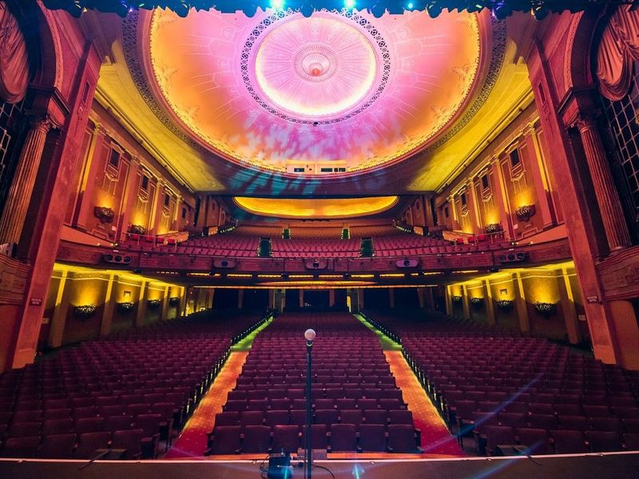
Palais Theatre
The Palais Theatre, a classic 1920s picture house turned live entertainment venue, is an landmark on the St Kilda foreshore in Melbourne. This beautifully restored art deco building has hosted a wide range of events over its 90-plus-year history, from mainstream musical acts to ballet and comedy shows. With its rich history and architecture, the theatre attracts both local talent and international superstars.
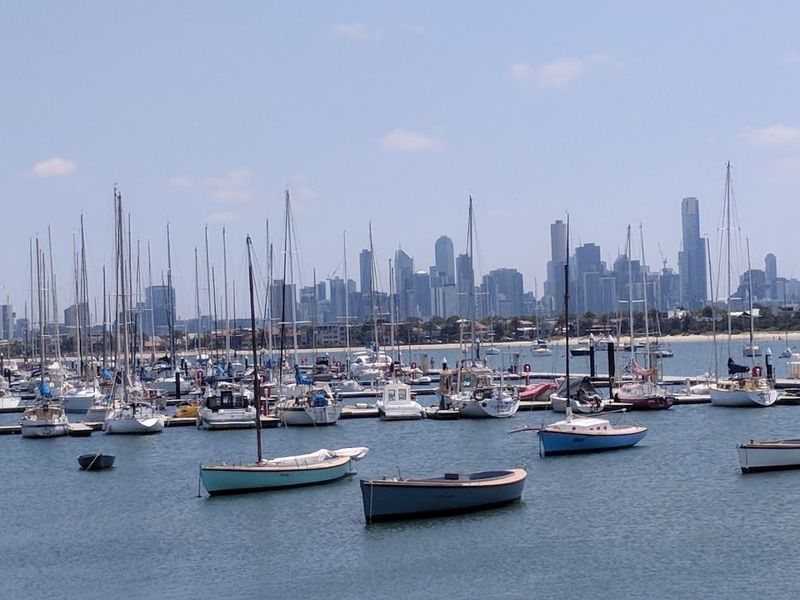
St Kilda Pier
St Kilda Pier is a popular spot in Melbourne, offering views of the city skyline and Port Phillip Bay. During the day, visitors can take a leisurely stroll along the pier, bask in the sunshine, and admire the panoramic vistas. The heritage-listed St Kilda Pier Kiosk at the end of the pier provides an opportunity to grab a coffee or snack. As evening falls, it becomes an ideal location for spotting Little Penguins as they make their way back home.
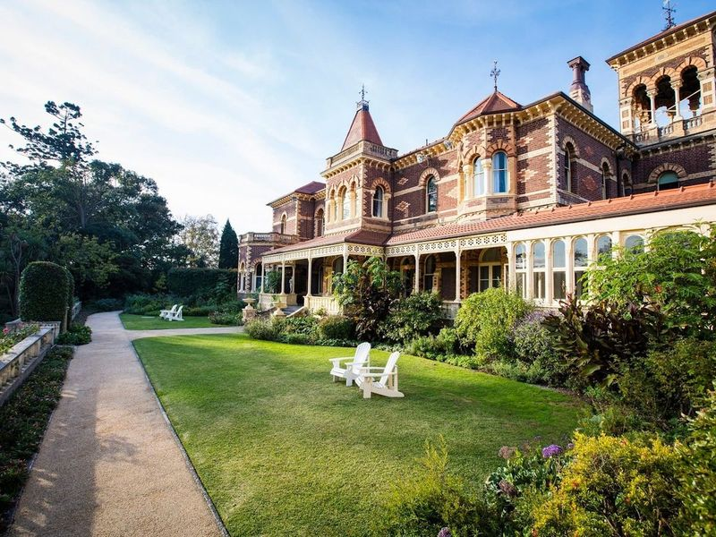
Rippon Lea Estate
Rippon Lea Estate is a grand 19th-century mansion set within expansive manicured gardens, offering guided tours and a charming cafe. Originally built in 1868 for businessman Frederick Sargood, the estate now welcomes visitors to explore its opulent interiors and lush grounds spanning 14 acres. The estate hosts various events throughout the year, from high tea and markets to themed parties.
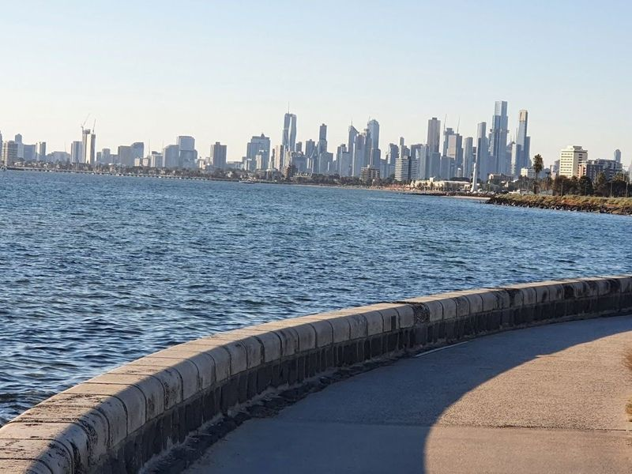
Point Ormond Lookout
Point Ormond Lookout, located at Elwood Beach in Australia, is a popular spot for photographers seeking views of the city skyline during sunset and sunrise. The lookout offers vistas of the bay, making it an ideal location for capturing dramatic seascapes under various weather conditions. Visitors can also enjoy walking or cycling along the continuous Bay trail adorned with interesting artwork and information.
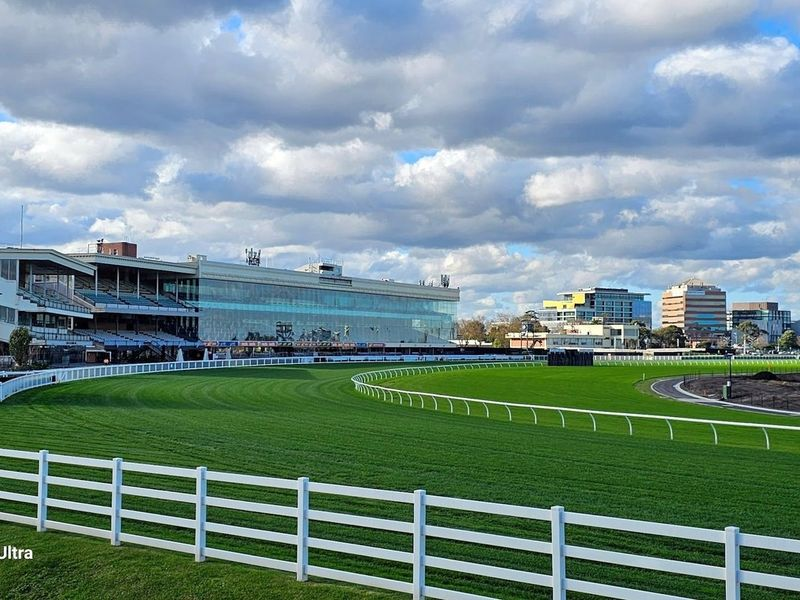
Caulfield Racecourse
Caulfield Racecourse, located in Melbourne, is a popular destination for horse racing enthusiasts and visitors. The spacious off-lead park features a lake, play areas, and sporting facilities. There are rumors of it becoming an on-leash park in the future, but for now, it's a completely fenced-off gem where enjoy with your pup. Additionally, the racecourse hosts a monthly market with food stalls, fresh produce, and various other vendors.
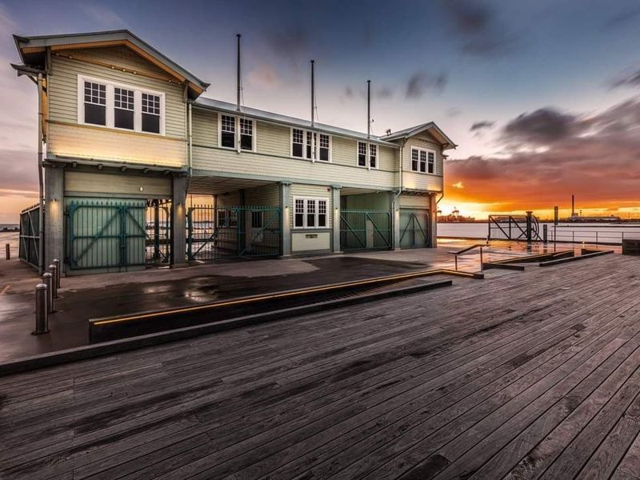
Princes Pier
Princes Pier, located in Port Melbourne, is a historic and photogenic landmark that stretches 560 meters into Port Phillip Bay. Originally built in 1915 to accommodate large cruise liners and serve as an arrival point for immigrants, it has since become a beloved spot for locals and tourists. The pier offers bay views, plenty of photo opportunities, and a rich sense of history.
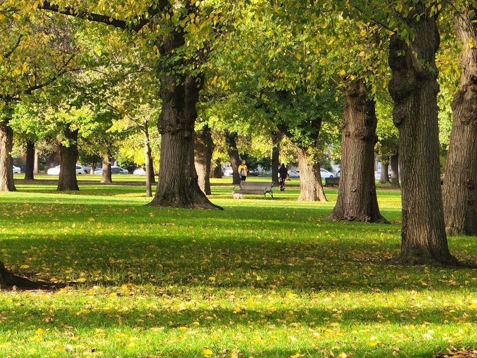
Edinburgh Gardens
Edinburgh Gardens is a vast 24-hectare park in North Fitzroy, offering an array of facilities for visitors to enjoy. The park features tennis courts, football pitches, a skate park, and designated off-leash areas for dogs. It's a popular spot for picnics with its expansive lawns, shaded areas, and picnic and barbecue spots. Additionally, the gardens boast playgrounds, basketball courts, lawn bowls, and a heritage rotunda.
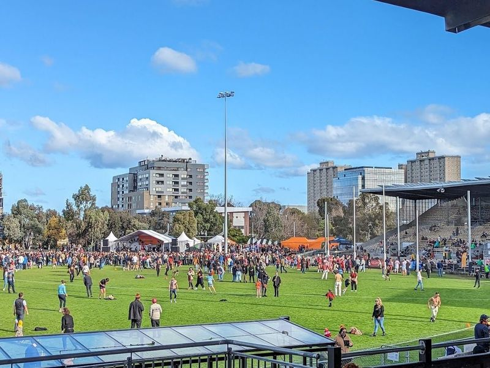
Victoria Park
Nestled just north of the bustling city, Victoria Park is a cherished landmark that once served as the home ground for the Collingwood Football Club from 1892 until 1999. This historic site has transformed into a community hub where locals can enjoy various recreational activities. The park features spacious areas perfect for exercising, dog walking, or simply kicking around a footy with friends.
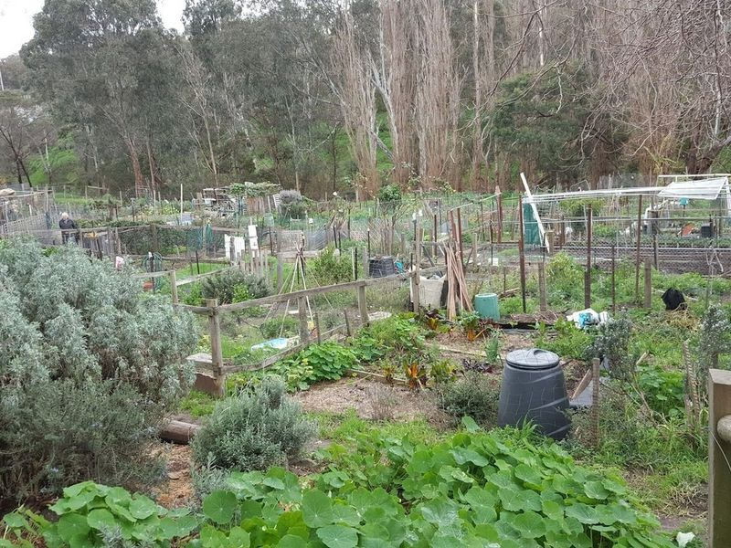
Collingwood Children's Farm
Located in the inner-city suburb of Abbotsford, Collingwood Children's Farm is a beloved nonprofit working farm offering hands-on experiences with various friendly animals. Visitors can feed chickens, cuddle goats and guinea pigs, milk cows like Heather, and enjoy pony or tractor rides. The farm also features pigs, ducks, sheep, lambs, rabbits, donkeys like Mickie and ponies like Joe.
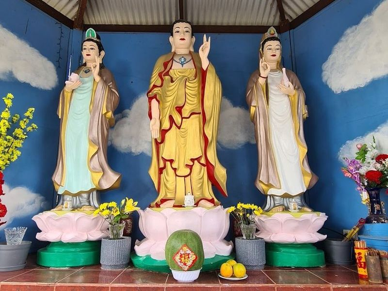
Quang Minh Buddhist Temple
The art center in Footscray is an exceptional gallery that presents a wide variety of local talent. The artwork displayed is not only visually but also thought-provoking and emotionally engaging. It celebrates diversity by featuring works from Indigenous artists and individuals of different cultural backgrounds, showcasing both emerging and established artists alike.
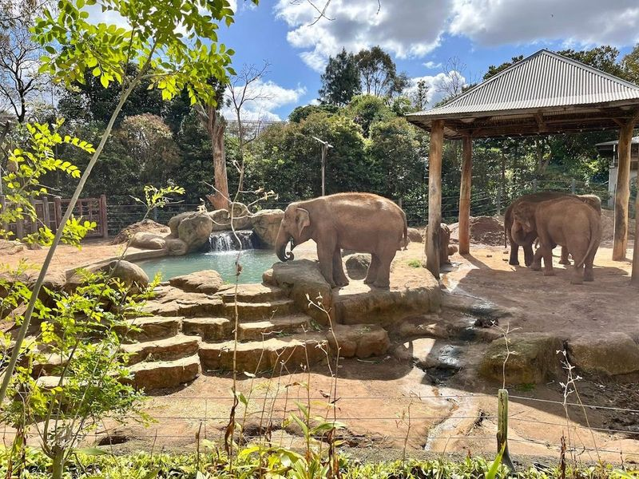
Melbourne Zoo
Melbourne Zoo, established in 1862, is one of the world's oldest zoos and a family-friendly destination. It houses over 320 animal species from around the world, totaling more than 5,000 individual creatures. Visitors can explore attractions such as the Reptile House, Butterfly House, Gorilla Rainforest, and Caterpillar Greenhouse. The award-winning Trail of the Elephants provides an opportunity to interact with these majestic animals in a recreated Asian village setting.
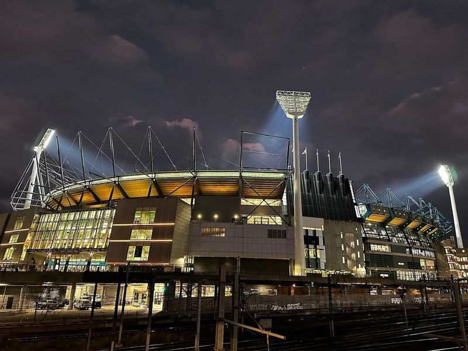
Melbourne Cricket Ground
The Melbourne Cricket Ground (MCG) is an sports venue with a rich history dating back to 1853. It has been the main stadium for the 1956 Summer Olympics and is known as the home of Australian football. With a capacity of 100,000 people, it's one of Melbourne's top tourist destinations. The MCG offers daily tours that provide visitors with insights into its storied past and significance in Australian sports history.